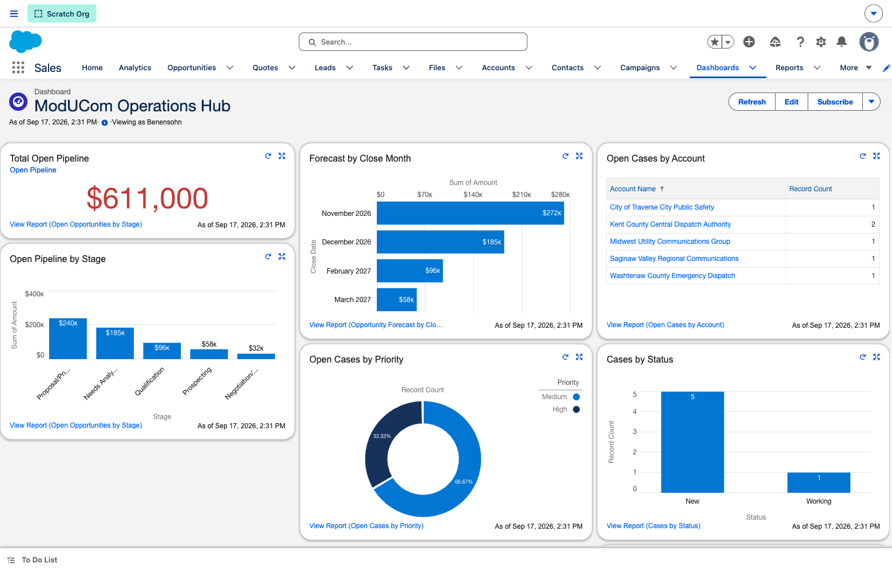
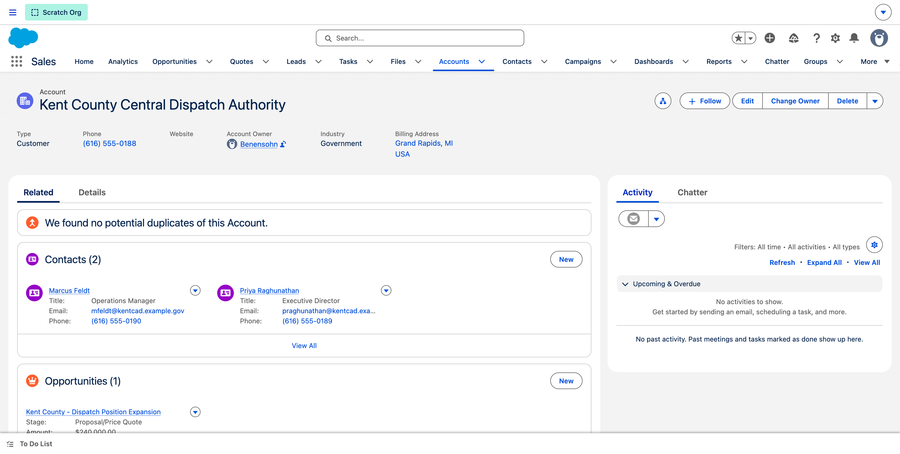
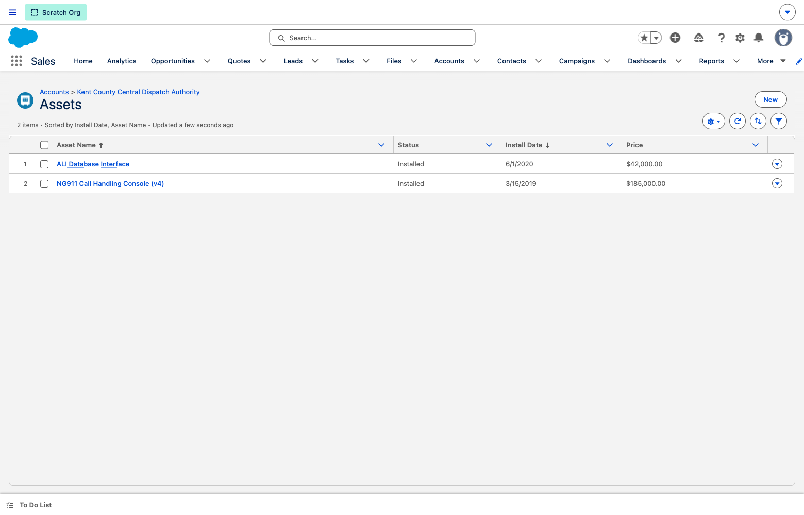
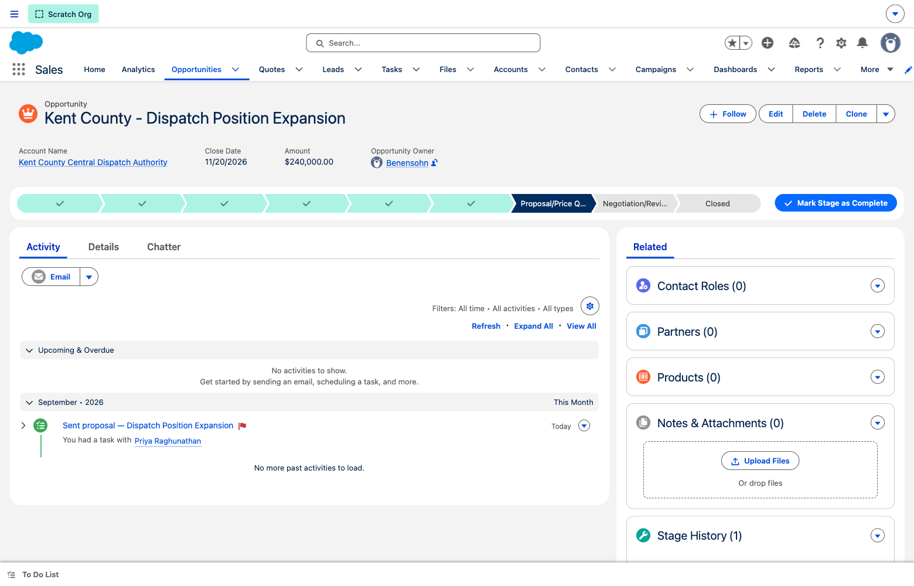
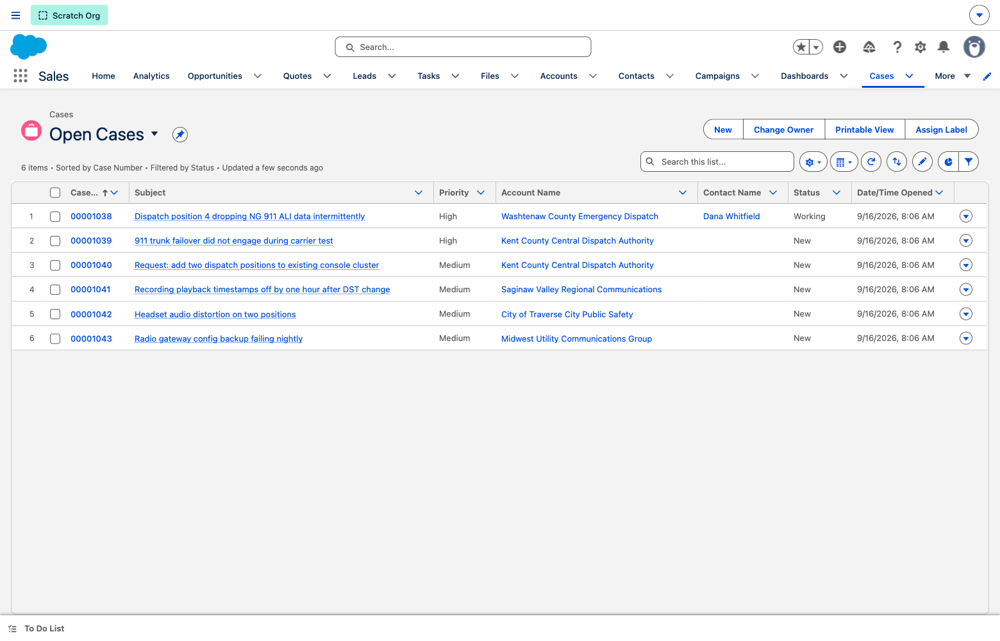
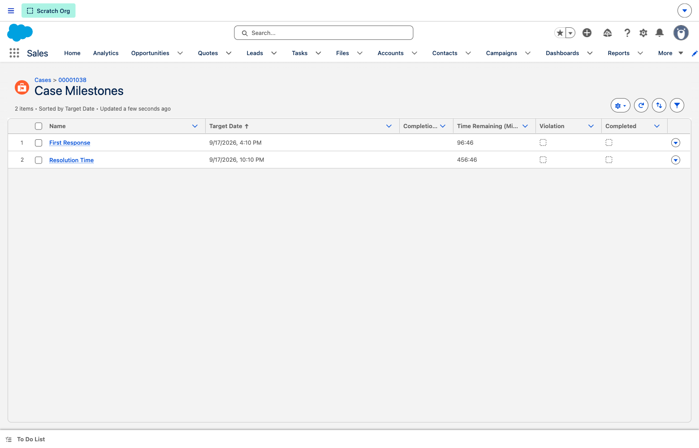
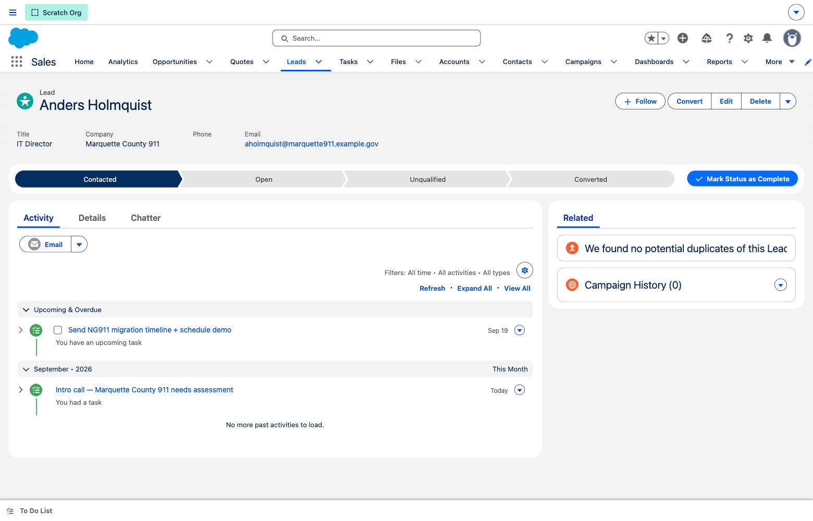

A guided runbook for the personalised Salesforce demo — built to pull ModUCom's sales pipeline, customer history, and support tickets out of Excel, SharePoint and Jira into one system your whole team can see. Updated to reflect Rose's walkthrough feedback.
Start here
Open the demo org in a clean browser window. It's seeded with a real public-safety dispatch book — county & fire-authority accounts, a live opportunity pipeline, a support-ticket queue with SLA milestones, installed-system records, and activity history. Sales and Service, side by side, on the same records.
Demo login is Rose's (the AE walking the prospect through it).
Since your walkthrough
Every point from the walkthrough has been addressed in the org. Grounded in the real, standard objects — no manufactured pains, no fictional custom objects.
6 reports now live in the ModUCom Operations folder, assembled into the ModUCom Operations Hub dashboard (pipeline, forecast, open cases by account/priority/status, installed systems). Dashboards tab → ModUCom Operations Hub.
Seeded 5 completed activities and 3 upcoming follow-up tasks across leads, the Kent County account, the expansion opportunity and the 911 case — so the "who-talked-to-whom / when to follow up" workflow demos end-to-end.
The click path is documented in Step 5 below (a hardware-refresh case → its account → a new upgrade Opportunity). The automated version is a next-phase build — flagged honestly.
Full demo click path and an honest live-vs-roadmap breakdown of the six automations are in the "Run of show" and "Automations" sections below.
The ModUCom Lead Path now carries per-stage guidance and key fields (Open → Contacted → Qualified/Convert → Unqualified). All four seeded leads are on it.
New Open Cases list view with Case #, Priority, Account Name, Contact and Status — filtered to open cases (no more "Recently Viewed").
Case 00001038 now has a Contact (Dana Whitfield), a completed troubleshooting activity + an open follow-up, and the SLA clock reset so First Response and Resolution show a live countdown instead of 00:00. (See the note in Step 4 — the countdown is time-relative.)
Installed NG911 systems are now Assets on each account (with install date, status and price). End-of-life units are flagged Obsolete — the proactive-upgrade signal. The Assets list is on the Account page, including Kent County.
Removed the "manual Excel exercise — the quoting pain point" wording from the Kent County opportunity. The Next Step now reads as a neutral, factual step. We don't manufacture a pain Travis didn't describe.
Run of show
What you're seeing
Everything scattered across spreadsheets, SharePoint and Jira today, unified — with your real dispatch customers seeded in so the story is concrete.
Every dispatch authority with its contacts, deals, tickets and installed systems on one screen.
Deals tracked prospect → closed-won — ~$611K open — rolled up into a live leadership dashboard.
Support requests logged, prioritised, and governed by First-Response & Resolution milestones.
What's deployed at each customer, and which units are due for a refresh.

"This is the view your leadership never had. Pipeline, forecast, and the entire support picture — open cases by customer, by priority, by status — plus your installed base, all in one screen that refreshes on demand."


"Everything you know about Kent County — split across Excel, a network folder and someone's inbox today — is one record. Every contact, every deal, every open ticket, and now the systems you've installed for them, with install dates and which are nearing end-of-life."

"Every deal sits on a pipeline — prospect through closed-won — so the whole team always knows where it stands. And right on the record is the history: what was discussed, when, and the next follow-up that's already scheduled."


"This is your ticketing system. The Open Cases view shows every live issue by priority and customer. Open the 911 ALI case and you see the whole story — the contact who reported it, the troubleshooting you logged, and an SLA clock counting down on First Response and Resolution."
SLA reset note: the countdown is time-relative. If you demo more than a few hours from now and the clock has lapsed, edit the case's SLA Policy Start Time (or ask SaaScend to reset it) so it shows a fresh countdown.
"When support finds a customer needs a hardware refresh, that's a sales opportunity. Today it never reaches Travis. Here, from the case you jump to the account and open a new Opportunity in two clicks — and it's tied to the same customer and its installed systems, so nothing falls through."

"Your team wears multiple hats, so the process coaches them. Each stage of the lead path spells out what 'good' looks like and the handful of fields that matter — so a sales-tech qualifying a new dispatch agency knows exactly what to do next."
Straight answer
The enablement deck listed six automations. Here's exactly what's running in the demo org today versus what's a next-phase build — so you can demo the live ones and speak to the rest as roadmap without overpromising.
| Automation (from the deck) | Status | How to handle it in the demo |
|---|---|---|
| Auto-link a support case to its account | Live | Cases are already tied to their account (standard behaviour) — visible on every case and the account 360. |
| Escalate / govern critical tickets on an SLA | Live | Entitlements + First-Response & Resolution milestones on the 911 case (Step 4). This is the real SLA engine. |
| Generate a sales opportunity from a service escalation | Roadmap | Demo the manual handoff click path (Step 5). Describe the auto-create flow as next-phase. |
| Reminder for proactive customer upgrade outreach | Roadmap | Show the Obsolete assets + the seeded follow-up tasks as the manual version; automation is next-phase. |
| Track marketing-source ROI monthly | Roadmap | No campaign data in the demo — speak to it as a goal, don't click into it. |
| Update account "last touch" on interaction | Roadmap | The native activity timeline already shows last touch; a dedicated field/flag is next-phase. |
Two of the six run live today (case-to-account linking and the SLA milestone engine). The other four are next-phase declarative builds — demo the manual equivalents shown above and position the automation as the tailored engagement.
Reference
| Area | Details |
|---|---|
| Accounts | 6 public-safety customers — county dispatch authorities, a fire authority, a regional comms group |
| Sales pipeline | 6 opportunities (~$611K open) — dispatch expansion, NG911 hardware, console replacement, renewals |
| Service / ticketing | 6 Cases; the 911 ALI case (00001038) has a contact, entitlement, SLA milestones & troubleshooting history |
| Installed systems | 7 Assets across accounts — install dates, price, and Obsolete flags for end-of-life units |
| Activity | 5 completed activities + 3 upcoming follow-ups across leads, account, opportunity & the 911 case |
| Leads | 4 leads on the ModUCom Lead Path with per-stage guidance & key fields |
| Reporting | 6 reports in ModUCom Operations → the ModUCom Operations Hub dashboard |
Built on Salesforce's standard objects (Opportunities, Cases, Assets, Leads, Entitlements) with your real customer data — nothing fictional. The remaining automation (Service→Sales auto-create, upgrade reminders, marketing ROI, last-touch) is the tailored next-phase engagement.